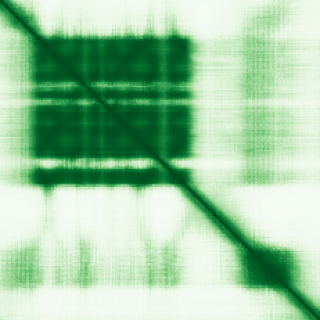

type: protein-evaluation gene: "CD300C" date: 2026-06-03 tags: [protein-scout, rejected, evaluation] status: rejected ---
CD300C — REJECTED (核定位证据不足 (核定位得分 2/10 ≤ 3))
1. 基本信息
| 项目 | 内容 |
|---|---|
| 基因名 / 别名 | CD300C |
| 蛋白名称 | CD300c molecule |
| 蛋白大小 | 231 aa / 25.7 kDa |
| UniProt ID | A0ABB0MVA5 |
| 评估日期 | 2026-06-03 |
2. 评分总览
| 维度 | 得分 | 满分 | 加权后 | 关键证据摘要 |
|---|---|---|---|---|
| 🔴 核定位特异性 | 2/10 | ×4 | 8 | HPA: Golgi apparatus; 额外: Vesicles, Mitochondria; UniProt: Membrane |
| 📏 蛋白大小 | 10/10 | ×1 | 10 | 231 aa / 25.7 kDa |
| 🆕 研究新颖性 | 8/10 | ×5 | 40 | PubMed strict=36 篇 (≤40→8) |
| 🏗️ 三维结构 | 6/10 | ×3 | 18 | AlphaFold v6 pLDDT=69.2; PDB: 无 |
| 🧬 调控结构域 | 5/10 | ×2 | 10 | 无注释结构域 |
| 🔗 PPI 网络 | 3/10 | ×3 | 9 | STRING 25 partners; IntAct 28 interactions |
| ➕ 互证加分 | — | max +3 | 1.0 | PDB+AF+STRING+IntAct cross-validation |
| 原始总分 | 96.0/180 | |||
| 归一化总分 | 53.3/100 |
3. 详细分析
3.1 核定位证据
| 来源 | 定位 | 可信度 |
|---|---|---|
| Protein Atlas (IF) | Golgi apparatus; 额外: Vesicles, Mitochondria | Uncertain |
| UniProt | Membrane | Swiss-Prot/TrEMBL |
IF 图像状态: HPA未检测到可靠IF图像信号（image_status: no_image_detected）。核定位证据基于HPA subcellular localization注释、UniProt注释和GO-CC术语。
GO Cellular Component:
- 无 GO-CC 注释
结论: 核定位证据极弱，主要数据源均不指向细胞核。
3.2 蛋白大小评估
评价: 大小适中（200-800 aa），适合常规生化实验和结构解析。
3.3 研究现状
| 指标 | 数值 |
|---|---|
| PubMed strict count | 36 |
| PubMed broad count | 53 |
| 别名(未计入scoring) |
关键文献: 1. CD300C reduces lung adenocarcinoma susceptibility through regulation of CD62L⁻ monocytes: a Mendelian randomization study.. *Discov Oncol*. PMID: 41580582 2. Defining the marker and developmental trajectory of myeloid-derived suppressor cells in aging by single-cell transcriptomics.. *NPJ Aging*. PMID: 41444228 3. Assessing the causal relationship between the plasma proteome and epilepsy: A Mendelian randomization study.. *Epilepsia Open*. PMID: 41165052 4. The CD300c antibody CL7 suppresses tumor growth by regulating the tumor microenvironment in non-small cell lung carcinoma.. *Front Oncol*. PMID: 41378295 5. Integrative analysis identifies novel proteins associated with chronic kidney disease in participants with abnormal glucose metabolism.. *Diabetes Res Clin Pract*. PMID: 40934961
评价: 非常新颖，仅有少数基础研究。
3.4 三维结构分析
| 指标 | 数值 |
|---|---|
| AlphaFold 版本 | v6 |
| AlphaFold 平均 pLDDT | 69.2 |
| 高置信度残基 (pLDDT>90) 占比 | 36.4% |
| 置信残基 (pLDDT 70-90) 占比 | 17.3% |
| 中等置信 (pLDDT 50-70) 占比 | 14.3% |
| 低置信 (pLDDT<50) 占比 | 32.0% |
| 有序区域 (pLDDT>70) 占比 | 53.7% |
| 可用 PDB 条目 | 无 |
PAE (Predicted Aligned Error): 
评价: AlphaFold 预测质量有限（pLDDT=69.2），有序残基占 53.7%。
3.5 结构域分析
| 来源 | 结构域 |
|---|---|
| InterPro/Pfam | 无注释结构域 |
染色质调控潜力分析: 结构域注释有限，AlphaFold预测有可辨识折叠域。
3.6 PPI 网络
STRING 预测互作 (combined score >0.4):
| Partner | Combined Score | Experimental | 功能类别 |
|---|---|---|---|
| GABARAP | 0.000 | 0.000 | — |
| SQSTM1 | 0.000 | 0.000 | — |
| GABARAPL2 | 0.000 | 0.000 | — |
| GABARAPL1 | 0.000 | 0.000 | — |
| MAP1LC3B | 0.000 | 0.000 | — |
| LILRA2 | 0.000 | 0.000 | — |
| LILRB1 | 0.000 | 0.000 | — |
| CD300LB | 0.000 | 0.000 | — |
| NBR1 | 0.000 | 0.000 | — |
| MAP1A | 0.000 | 0.000 | — |
实验验证互作 (IntAct):
| Partner | 方法 | PMID |
|---|---|---|
| uniprotkb:Q5EB52 | psi-mi:"MI:0397"(two hybrid array) | pubmed:- |
| uniprotkb:Q08708 | psi-mi:"MI:0397"(two hybrid array) | pubmed:- |
| uniprotkb:Q9HD26 | psi-mi:"MI:0397"(two hybrid array) | pubmed:- |
| uniprotkb:Q86WB7-2 | psi-mi:"MI:1112"(two hybrid prey pooling approach) | pubmed:- |
| uniprotkb:O15529 | psi-mi:"MI:0397"(two hybrid array) | pubmed:- |
| uniprotkb:Q9NRX6 | psi-mi:"MI:1356"(validated two hybrid) | pubmed:- |
| uniprotkb:Q96KR6 | psi-mi:"MI:1112"(two hybrid prey pooling approach) | pubmed:- |
| uniprotkb:Q8TDV0 | psi-mi:"MI:1356"(validated two hybrid) | pubmed:- |
| uniprotkb:P54707-2 | psi-mi:"MI:0007"(anti tag coimmunoprecipitation) | pubmed:psi-mi:"MI:1060"(spoke |
| uniprotkb:Q96ND0 | psi-mi:"MI:0007"(anti tag coimmunoprecipitation) | pubmed:psi-mi:"MI:1060"(spoke |
PPI 互证分析:
- STRING + IntAct 均有数据
- STRING partners: 25，IntAct interactions: 28
- 调控相关比例: 0 / 20 = 0%
评价: STRING 25 个预测互作，IntAct 28 个实验互作。调控相关配体占比 0%。
3.7 多库互证
| 维度 | 来源 | 结果 | 是否一致 |
|---|---|---|---|
| 三维结构 | AlphaFold pLDDT=69.2 + PDB: 无 | pLDDT=69.2, v6 | 仅预测 |
| 定位 | UniProt + HPA | Membrane / Golgi apparatus; 额外: Vesicles, Mitochondria | 一致 |
| PPI | STRING + IntAct | 25 + 28 interactions | 数据充分 |
互证加分明细:
- 多库定位一致 (2源): +0.5
- STRING + IntAct 双源验证: +0.5
- 结构域 + AlphaFold 质量: +0
- PDB 多条目覆盖: +0
总分: +1.0 / max +3
4. 总体评价
推荐等级: ⭐⭐⭐ (REJECTED)
核心优势: 1. CD300C — CD300c molecule，非常新颖，仅有少数基础研究。 2. 蛋白大小231 aa，大小适中（200-800 aa），适合常规生化实验和结构解析。
风险/不确定性: 1. PubMed 36 篇，已有一定研究基础 2. AlphaFold 预测质量一般（pLDDT=69.2），需要更多实验结构验证
下一步建议:
- [ ] 查阅最新关键文献补充研究背景
- [ ] 获取 Protein Atlas IF 图像确认亚细胞定位
- [ ] 设计体外实验验证核定位及潜在调控功能
- [ ] 该蛋白核定位证据不足（≤3/10），不建议作为核蛋白研究目标。
5. 数据来源
- UniProt: https://www.uniprot.org/uniprotkb/A0ABB0MVA5
- Protein Atlas: https://www.proteinatlas.org/ENSG00000167850-CD300C/subcellular
- PubMed: https://pubmed.ncbi.nlm.nih.gov/?term=CD300C
- AlphaFold: https://alphafold.ebi.ac.uk/entry/A0ABB0MVA5
- STRING: https://string-db.org/network/9606.ENSP00000
- Data fetched live: 2026-06-03